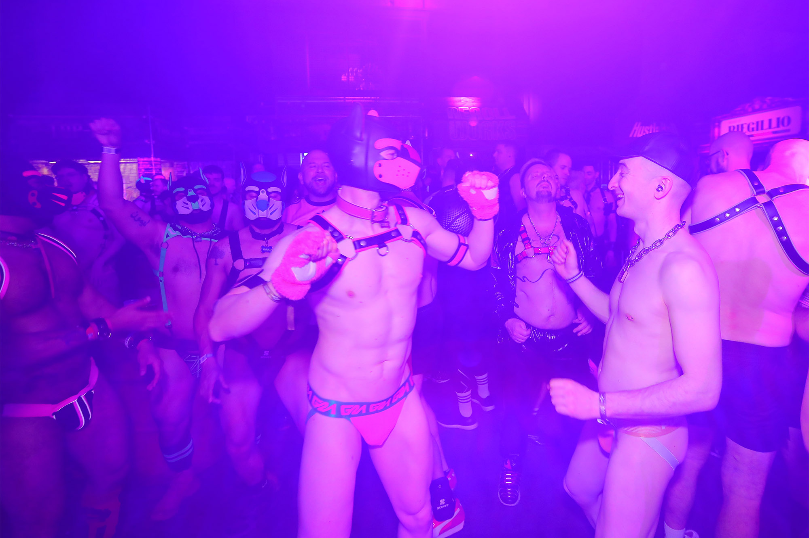

Maspalomas Fetish Pride
Plusieurs jours de rencontres, soirées et activités autour des différents univers fetish.
Source vérifiée le 27 septembre 2026Voir chez l’organisateur

AGENDA FETISH
Les soirées près de chez toi, les grands rendez-vous qui valent le détour. Un agenda pour trouver ton prochain terrain de jeu.
Explorer les eventsEn France et grands rendez-vous européens. Pour plus d'info, on te met le lien direct de la soirée quand c'est possible.
AGENDA PAR MOIS
Choisis un jour pour voir les events correspondants juste en dessous. Les jours en vert ont déjà un rendez-vous annoncé.
Tous les événements à venir
Plusieurs jours de rencontres, soirées et activités autour des différents univers fetish.
Une soirée underwear annoncée par le REDZONE. Les modalités d’accès sont à confirmer auprès de l’organisateur.
Une semaine de festival fetish avec soirées, rencontres et programmation en ville.
Un week-end parisien de soirées fetish. La programmation 2027 reste à confirmer par l’organisateur.
Aucun événement annoncé pour cette sélection. Reviens bientôt : l’agenda évolue avec les annonces des organisateurs.
Les informations peuvent changer. Vérifie toujours les horaires, conditions d’accès et billets sur le site de l’organisateur avant de te déplacer. Kinq ne vend pas de billets pour ces événements.
Le monde fetish prend vie dans les soirées, les festivals, les ateliers et les rendez-vous, qu’ils aient lieu dans les grandes villes ou en province. Ce sont des espaces pour se retrouver, explorer et être soi, dans le respect de chacun.
Un gros événement ouvre des horizons, mais une petite soirée peut être une première rencontre avec cet univers. Tous deux font exister ces espaces de liberté : c’est pour ça qu’ils ont leur place dans l’agenda.